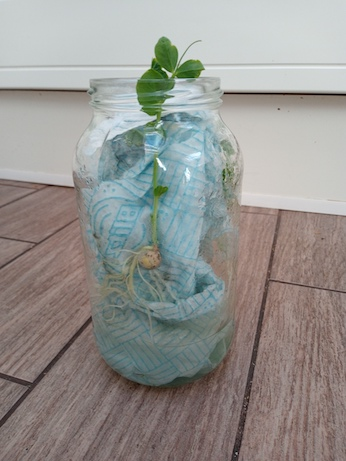

How do
seeds grow?

Large seeds like beans and peas contain enough
nutrients that they can develop into a small plant without
any soil, so long as they are provided with water. This
presents a great opportunity for children to watch the way a
seed grows and develops close-up.
It is very simple. All you need is a glass jar (a jam jar or
coffee jar will do fine) some paper towel or cotton wool and
a couple of bean or pea seeds. Then pack the padding
material into the jar quite tightly - you don't want your
seeds to slip down - insert a couple of seeds down the side
of the padding, so they are held half-way up the side of the
jar. Pour in enough water to ensure that the whole thing is
moist, but the seed is not waterlogged and keep an eye on it
to ensure it doesn't dry out. You can then watch the seed do
its thing.
It would be good to get your young scientist to draw what
happens at various different stages. If they are keeping a Nature Journal then this
would be a good place to record developments. What comes
first, the roots or the growing shoot? Which parts are
green? Notice how the root always heads downward and the
shoot upwards, whichever way round the seed is placed in the
jar. Provide it with some light (a windowsill is ideal) as
soon as the shoot starts to develop leaves. How long does
the whole process take, until you have a small plant? See
how far your plant will develop before it starts to run out
of steam. Of course, if it were growing in the garden, it
would take up nutrients from the soil to keep going, but
even without that it can get quite a long way, since the
chlorophyll in the leaves captures energy from the sun,
enabling it to synthesise sugars from CO2 and
water.